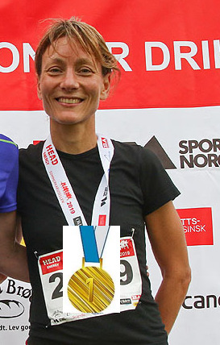

ting linda liker
Hei. Siden du har bursdag har jeg samla noen ting jeg tror du liker :)
nr. 1:
SalukiBonus: salukivalper
nr. 2:
Sjokolade / kakao (obs, det kan hende jeg blander med min egen etusiasme for kakao, men jeg velger å kategorisere deg som meningsfelle her)
nr. 3, Linda liker å løpe
Linda er flink til å søke om penger, men minst like flink til å løpe. Hun løper nesten like bra som en saluki.
siste / nr. 4:
LEVENDE lam, dvs, ikke kjøttdeig